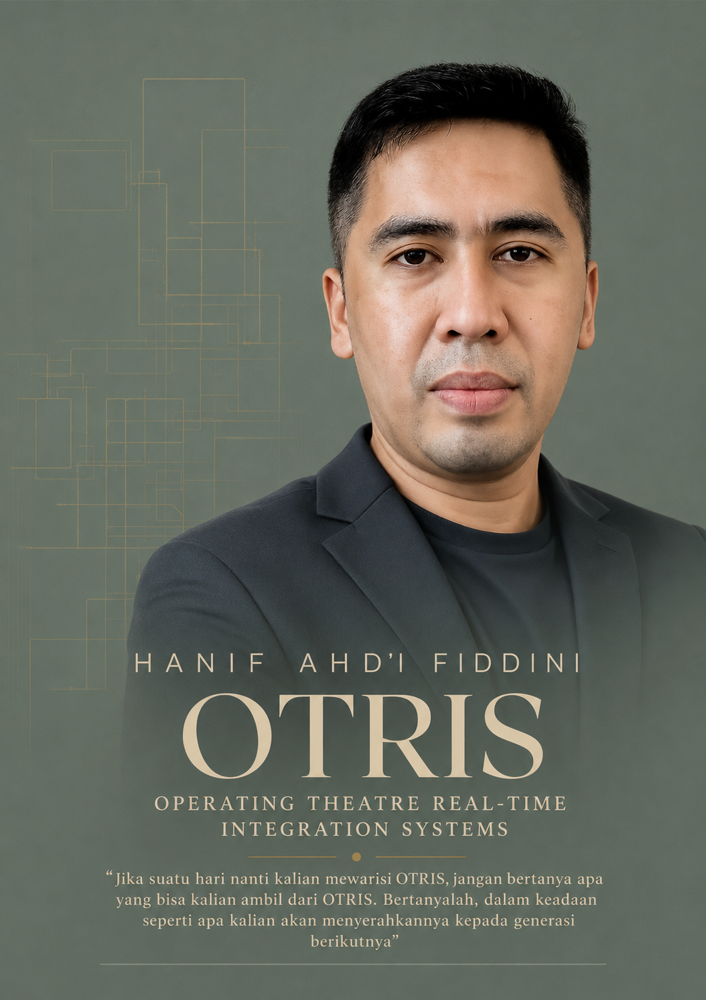

KETIKA KONSTITUSI MENJADI JALAN KELUAR
Dari Kesendirian, Arsitektur, hingga Reference, Verification & Continuous Integrity
Dari Kesendirian, Arsitektur, hingga Reference, Verification & Continuous Integrity
Bagian reflektif — Reference, Verification & Continuous Integrity: For the Improbable
1. Ketika Semua Pergi
Ada satu masa dalam perjalanan membangun OTRIS ketika saya menyadari bahwa tidak ada lagi pilihan selain melanjutkannya sendiri.
Orang-orang yang sebelumnya berada di sekitar perjalanan itu telah pergi. Saya tidak lagi dapat menggantungkan kelanjutan pekerjaan pada kehadiran mereka. Apa yang sebelumnya dapat dibicarakan, dibagi, atau dikerjakan bersama, pada akhirnya harus saya hadapi sendiri.
Saya tidak memulai dari keadaan yang ideal. Saya tidak mempunyai seluruh jawaban, tidak menguasai setiap persoalan teknis, dan tidak mengetahui berapa banyak hambatan yang masih akan saya temui. Tetapi saya mengetahui satu hal: apa yang telah saya mulai tidak boleh kehilangan tujuannya hanya karena orang-orang yang dahulu berada di dalam perjalanan itu tidak lagi bersama saya.
Maka saya mulai menulis.
Bukan langsung menulis program. Saya mulai dengan arsitektur.
Saya berusaha menjawab pertanyaan yang paling mendasar: sistem seperti apa yang sebenarnya ingin saya bangun? Bagaimana perangkat-perangkat yang berbeda dapat bekerja bersama? Di mana batas kewenangan setiap komponen? Apa yang boleh dilakukan sistem, dan apa yang tidak boleh dilakukan, bahkan ketika teknologi memberikan kesempatan untuk melakukannya?
Semakin jauh saya menuliskan arsitektur itu, semakin saya memahami bahwa arsitektur saja belum cukup. Arsitektur menjelaskan bagaimana sebuah sistem disusun, tetapi belum tentu menjawab apa yang harus dipertahankan ketika sistem menghadapi kesulitan.
Dari kesadaran itulah saya mulai menulis konstitusi.
2. Saya Menulis Konstitusi Sebelum Menemukan Semua Jawaban
Ketika menulis konstitusi OTRIS, saya tidak sedang menuliskan sesuatu yang telah sepenuhnya berhasil saya bangun. Saya sedang menetapkan batas-batas yang secara sadar saya anggap benar dan harus dipertahankan.
Saya menetapkan bahwa OTRIS harus mengutamakan integrasi daripada penggantian perangkat. Sistem tidak boleh bergantung pada satu vendor. Data yang berasal dari perangkat harus dihormati sebagai kenyataan yang tidak boleh diubah hanya untuk memudahkan proses integrasi. Apa yang belum diketahui harus tetap dinyatakan belum diketahui. Setiap hasil yang dianggap benar harus memiliki sumber, bukti, dan jejak yang dapat diperiksa kembali.
Prinsip-prinsip itu saya tulis ketika saya belum mengetahui seluruh cara untuk mewujudkannya.
Pada saat itu saya belum memahami sepenuhnya bahwa keputusan tersebut kelak akan membawa saya pada persoalan yang jauh lebih sulit daripada sekadar menyusun perangkat lunak.
Saya sedang membuat sebuah janji terhadap sistem yang saya bangun sendiri.
Dan suatu hari, janji itu diuji.
3. Ketika Teknologi Meminta Saya Mengubah Prinsip
Dalam proses membangun integrasi perangkat medis, saya berhadapan dengan kenyataan bahwa komunikasi perangkat mempunyai bahasa, struktur data, antarmuka, dan protokolnya masing-masing.
Untuk memahami keluaran sebuah perangkat, sebuah sistem harus mempunyai cara untuk membaca dan menafsirkan komunikasi tersebut. Dalam pendekatan integrasi konvensional, dokumentasi protokol dari vendor sering menjadi salah satu jalan penting untuk melakukannya.
Di sinilah saya menemukan pertentangan yang menentukan arah perjalanan saya.
Saya ingin membangun sistem yang tidak bergantung pada satu vendor. Tetapi untuk maju, saya dihadapkan pada kebutuhan mengetahui protokol perangkat.
Jika setiap integrasi harus menunggu seluruh informasi dari vendor, bagaimana prinsip kemandirian dan keterbukaan integrasi yang telah saya tetapkan dapat diwujudkan?
Saya mempunyai pilihan yang terlihat lebih mudah: mengubah konstitusi agar sesuai dengan keterbatasan pendekatan teknis yang saya temui.
Saya dapat menambahkan pengecualian, mempersempit tujuan, atau menerima bahwa sistem hanya dapat bekerja dengan perangkat yang protokolnya sudah diketahui sebelumnya.
Namun saya tidak memilih jalan itu.
Bukan karena saya menganggap konstitusi tidak mungkin salah. Konstitusi yang dibuat manusia tetap harus terbuka terhadap pemeriksaan dan koreksi berdasarkan alasan yang dapat dipertanggungjawabkan.
Tetapi saya tidak menemukan alasan yang cukup untuk mengorbankan prinsip tersebut hanya karena saya belum mengetahui cara teknis untuk mewujudkannya.
Ketidaktahuan saya tentang suatu cara bukan bukti bahwa prinsip yang saya tetapkan itu salah.
Saya telah menulis konstitusi itu dengan sadar. Karena itu, saya merasa mempunyai tanggung jawab untuk mengujinya dengan sungguh-sungguh sebelum memutuskan bahwa ia harus diubah.
Saya memilih mencari jalan lain.
4. Ketika Pertanyaan Berubah, Jalan Mulai Terlihat
Sebelumnya, pertanyaan yang saya hadapi adalah:
Bagaimana saya dapat mengintegrasikan perangkat jika saya belum mengetahui protokolnya?
Kemudian saya mulai melihat bahwa pertanyaan tersebut mungkin terlalu cepat melompat pada kebutuhan untuk memahami.
Saya mencoba memulainya dari sesuatu yang lebih mendasar.
Sebelum memahami bahasa sebuah perangkat, apakah kita dapat terlebih dahulu mengamati apa yang benar-benar dikeluarkannya?
Sebelum menentukan arti suatu nilai, apakah kita dapat menyimpan data aslinya tanpa mengubahnya?
Sebelum menyatakan bahwa suatu kode adalah denyut jantung, saturasi oksigen, atau parameter lainnya, apakah kita dapat memeriksa struktur, perubahan, hubungan, dan bukti yang mendukung penafsiran tersebut?
Dari pertanyaan-pertanyaan inilah saya mulai melihat pemisahan yang sangat penting.
Membaca bukan berarti memahami. Memahami bukan berarti telah membuktikan. Dan sesuatu yang telah terbukti dalam suatu keadaan belum tentu tetap berlaku ketika keadaan berubah.
Saya tidak lagi harus memaksa sistem mengetahui sesuatu sejak awal.
Sistem dapat memulai dari ketidaktahuan yang diakui secara terbuka, kemudian melakukan observasi, menyimpan bukti, membangun kandidat pemahaman, dan mengujinya terhadap referensi yang sah.
Ketika bukti belum cukup, sistem tidak perlu berpura-pura mengetahui jawabannya.
Ia dapat mengatakan: UNKNOWN.
Bagi saya, itu bukan kegagalan. Itu adalah kejujuran teknis.
5. Dari Pengamatan Menuju WIJOYO KUSUMO
Cara berpikir tersebut kemudian menjadi bagian penting dalam pengembangan WIJOYO KUSUMO.
Saya mulai melihat kebutuhan akan sebuah sistem yang tidak sekadar menerima data dari perangkat, tetapi juga mampu membangun pengetahuan integrasi melalui proses yang dapat ditelusuri.
Perangkat berbicara melalui keluaran yang tersedia. Sistem mengamati. Data asli dipertahankan. Struktur diperiksa. Pola dikenali sebagai kandidat, bukan langsung sebagai kebenaran. Bukti dikumpulkan, dibandingkan, dan diuji. Setelah melalui pemeriksaan dan kewenangan yang sesuai, barulah pengetahuan tersebut dapat dipakai oleh sistem produksi.
Di sini saya menemukan perbedaan antara kecerdasan dan kewenangan.
Sebuah sistem dapat cukup cerdas untuk menemukan pola, tetapi penemuan pola tidak memberinya hak untuk menyatakan bahwa suatu makna telah terbukti.
Kecerdasan dapat membantu menyusun pertanyaan dan mengusulkan jawaban. Bukti harus mendukung jawaban itu. Tata kelola menentukan apakah hasilnya layak digunakan.
Dengan demikian, WIJOYO KUSUMO bukan saya tempatkan sebagai mesin yang bebas menebak arti data. Ia menjadi bagian dari proses membangun pemahaman yang dapat diperiksa.
Dan semakin jauh saya memikirkan proses itu, semakin saya menyadari bahwa persoalannya bukan lagi semata-mata tentang protokol.
Persoalannya adalah bagaimana pengetahuan dibangun.
6. Ketika Quality Control Memberi Bahasa bagi Jawaban Itu
Dalam perjalanan berikutnya, saya kembali berhadapan dengan prinsip-prinsip Quality Control.
Saya mulai memperhatikan bagaimana suatu hasil pengukuran tidak cukup dinilai hanya karena sebuah angka berhasil ditampilkan. Harus ada referensi yang sesuai, metode pemeriksaan, perbandingan, pengulangan apabila relevan, dan cara untuk mengetahui apakah hasil tersebut tetap konsisten dari waktu ke waktu.
Dalam Quality Control, kita mengenal baseline, standard atau reference, pemeriksaan pada beberapa tingkat bila metode mensyaratkannya, pengukuran berulang, evaluasi variasi, dan pengamatan longitudinal.
Saya kemudian melihat kesamaan yang mendalam antara disiplin tersebut dan persoalan integrasi yang sedang saya hadapi.
Ketika sebuah perangkat menghasilkan data, keberhasilan membaca data itu belum cukup untuk membuktikan bahwa penafsirannya benar.
Ketika suatu penafsiran terlihat konsisten, konsistensi itu belum cukup untuk membuktikan makna klinisnya.
Ketika sebuah pemetaan telah diverifikasi, hasil tersebut tetap harus mempunyai identitas, versi, bukti, dan mekanisme pemeriksaan ulang apabila terdapat perubahan yang relevan.
Dari sini, gagasan Reference, Verification & Continuous Integrity memperoleh bentuk yang semakin jelas.
Reference memberikan dasar pembanding. Verification menguji apakah suatu klaim benar-benar didukung. Continuous Integrity menjaga agar kepercayaan tidak terputus dari bukti dan riwayat yang membangunnya.
Saya juga memahami batasnya. QC integrasi tidak boleh berpura-pura menggantikan kalibrasi resmi perangkat medis, Quality Control laboratorium klinis, atau penilaian tenaga kesehatan. Tujuannya adalah memeriksa keandalan proses integrasi, pemetaan, transformasi, dan konsistensi sistem sesuai metode serta kewenangannya.
Justru dengan mengakui batas tersebut, prinsip yang saya tulis sejak awal menjadi semakin bermakna.
7. Saya Mulai Memahami Mengapa Konstitusi Itu Diperlukan
Pada tahap ini saya melihat kembali perjalanan dari awal.
Ketika semua pergi, saya mengira persoalan terbesar saya adalah bagaimana melanjutkan pembangunan sendirian.
Ketika menulis arsitektur, saya mengira persoalan terbesar saya adalah bagaimana menyusun komponen agar dapat bekerja bersama.
Ketika menulis konstitusi, saya sedang menetapkan prinsip yang belum seluruhnya saya ketahui cara penerapannya.
Ketika menghadapi kebutuhan protokol, saya mengira sedang berhadapan dengan keterbatasan teknologi.
Tetapi setelah melewati proses observasi, evidence, reference, verification, dan Quality Control, saya mulai memahami sesuatu yang sebelumnya belum terlihat.
Konstitusi yang saya tulis bukan sekadar kumpulan aturan yang membatasi pembangunan.
Konstitusi itu memaksa saya membedakan antara sesuatu yang benar-benar mustahil dan sesuatu yang caranya belum saya temukan.
Tanpa batas yang saya tetapkan sendiri, mungkin saya akan lebih cepat menerima jalan yang tersedia. Saya dapat mengubah tujuan agar sesuai dengan alat yang ada, lalu menyebutnya sebagai penyelesaian.
Namun dengan mempertahankan prinsip tersebut, saya harus terus bertanya, mencari, menguji, dan memeriksa.
Saya tidak sedang mempertahankan sebuah dokumen karena saya yang menulisnya. Saya sedang berusaha mempertanggungjawabkan alasan mengapa dokumen itu saya tulis.
Di situlah saya mulai memahami arti sebuah konstitusi dalam pembangunan teknologi.
Konstitusi bukan jaminan bahwa setiap keputusan awal pasti benar. Ia adalah dasar yang membuat perubahan harus mempunyai alasan, bukan sekadar mengikuti tekanan atau kesulitan sesaat.
8. Dari Membangun Sistem Menuju Membangun Kepercayaan
Pada akhirnya, saya mulai melihat bahwa perjalanan ini mempunyai persoalan yang lebih luas daripada integrasi perangkat medis.
Ini adalah persoalan lama dalam kehidupan manusia: bagaimana kita mengetahui bahwa sesuatu layak dipercaya?
Manusia mengamati, membandingkan, menguji, mengingat, lalu membangun kepercayaan berdasarkan apa yang dapat dipertanggungjawabkan.
Teknologi membuat proses itu dapat berlangsung lebih cepat dan dalam skala yang lebih besar. Tetapi teknologi tidak menghapus kewajiban untuk membuktikan.
Bahkan kecerdasan buatan yang mampu mengenali pola dan menyusun penjelasan tetap tidak boleh menggantikan sumber kenyataan, bukti, dan kewenangan.
Saya belajar bahwa ketidakpastian tidak harus disembunyikan. Kesalahan tidak harus dihapus dari sejarah. Koreksi tidak harus dianggap sebagai kelemahan. Sebaliknya, sebuah sistem yang dapat menunjukkan bagaimana pemahamannya dibentuk, diuji, dan diperbaiki justru mempunyai dasar kepercayaan yang lebih kuat.
Karena itu, saya semakin meyakini satu prinsip:
Jangan mengubah kenyataan agar sesuai dengan sistem. Bangunlah sistem yang mampu memahami kenyataan tanpa mengkhianatinya.
9. For the Improbable
Saya tidak mengetahui sejak awal bahwa perjalanan menulis arsitektur akan membawa saya kepada konstitusi, kemudian kepada persoalan protokol, pengamatan data, pembuktian semantik, Quality Control, dan akhirnya kepada pertanyaan tentang kepercayaan.
Semua itu tidak hadir sebagai satu jawaban yang sudah lengkap.
Jawabannya tumbuh melalui persoalan yang saya hadapi satu demi satu.
Saya juga tidak ingin menggambarkan perjalanan ini seolah-olah seluruh masalah telah selesai. Masih ada pekerjaan teknis yang harus diuji, perangkat yang harus divalidasi, dan keputusan yang harus dibuktikan melalui pelaksanaan nyata.
Tetapi sekarang saya memahami mengapa saya memilih untuk tidak langsung mengubah konstitusi ketika menemukan hambatan.
Saya ingin memberi kesempatan kepada prinsip yang telah saya tetapkan untuk diuji oleh usaha terbaik yang dapat saya lakukan.
Dan dalam proses mempertahankan prinsip itu, saya justru menemukan cara berpikir yang sebelumnya tidak saya miliki.
Dahulu saya mengira sedang mencari jalan agar sebuah sistem dapat bekerja.
Sekarang saya memahami bahwa saya sedang belajar membangun sesuatu yang dapat dipercaya.
Ketika semua pergi, saya mulai membangun sendiri. Ketika jalan yang tersedia meminta saya mengubah prinsip, saya memilih mencari jalan lain. Dan ketika saya mulai menemukan jawabannya, saya menyadari bahwa konstitusi yang saya tulis bukanlah penghalang perjalanan itu. Ia telah menjadi penunjuk arah.
Itulah arti For the Improbable bagi saya.
Bukan keyakinan bahwa segala sesuatu pasti dapat dilakukan, melainkan keberanian untuk tidak menyebut sesuatu mustahil sebelum kita sungguh-sungguh memahami persoalannya, menguji jalan yang tersedia, dan membuktikan batas-batasnya.
Sebab sesuatu yang serius tidak cukup hanya berhasil dibangun.
Ia harus layak dipercaya.
